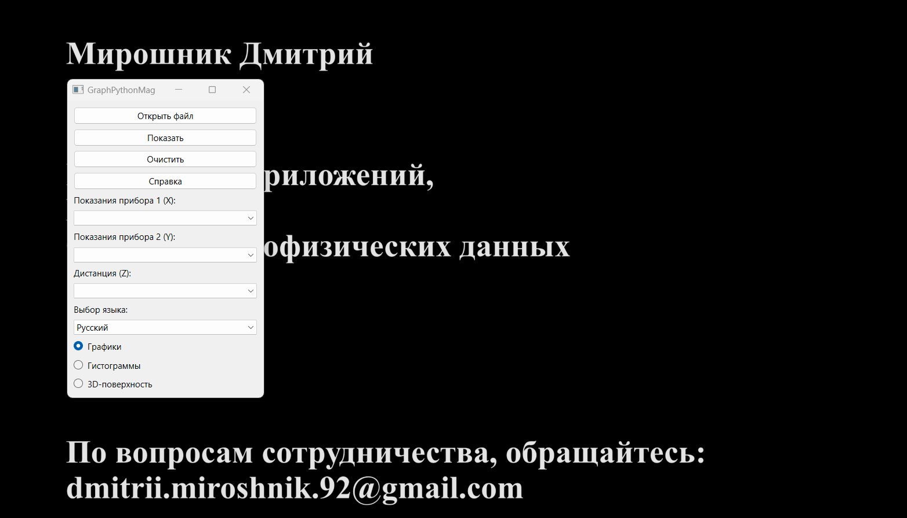
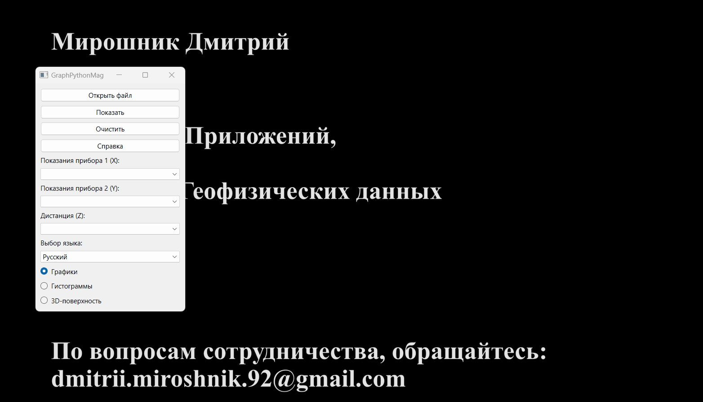

هذا التطبيق لعرض مجموعة متنوعة من البيانات الجيوفيزيائية.
يتضمن القدرة على إنشاء رسوم بيانية، وهيستوغرامات، وسطح ثلاثي الأبعاد بجودة طباعية.
يمكن استخدام أي بيانات رقمية موجودة في جدول وتخزينها في ملف بامتداد 'CSV' كبيانات مدخلة.
واجهة البرنامج
انقر فوق الزر "فتح" للعثور على وفتح ملف CSV المصدر.

استخدم القائمة المنسدلة لتحديد البيانات المناسبة.
لمسح البيانات، انقر فوق الزر "مسح".
لإجراء التحليل البياني، انقر فوق الزر "إظهار".
لتغيير لغة الواجهة، حدد إحدى اللغات المتاحة في القائمة المنسدلة "تحديد اللغة".
عند الحاجة إلى المساعدة، يمكنك الحصول عليها عن طريق النقر على زر "مساعدة".
الرسوم البيانية
لإنشاء الرسوم البيانية البسيطة، يتم استخدام مكتبة Matplotlib العلمية.
يتم تنفيذ الأنواع التالية من الرسوم البيانية في هذا البرنامج:
الرسم البياني البسيط. لإنشاء رسم بياني بسيط، حدد قيم أي من عمودي "قراءات الجهاز 1" أو "قراءات الجهاز 2".

الرسم البياني المدمج. لمقارنة قراءات جهازين، حدد القيم لعمودين: "قراءات الجهاز 1" و "قراءات الجهاز 2".
رسم بياني يعتمد على المسافة. يمكنك أيضًا دمج مختلف أنواع الرسوم البيانية حسب المسافة.
لذلك، حدد قيمة قناة المسافة من القائمة المنسدلة "المسافة".
الهيستوغرامات
لإنشاء هيستوغرامات للتوزيع الطبيعي، يتم استخدام إضافة Seaborn لمكتبة Matplotlib.
يتم تنفيذ أنماط عرض مختلفة للتوزيع الطبيعي في هذا البرنامج:
هيستوغرام بسيط، متزامن مع رسم بياني للتوزيع الطبيعي.
لإنشاءه، حدد قيمة أي من عمودي "قراءات الجهاز 1" أو "قراءات الجهاز 2".
هيستوغرامات مدمجة. لمقارنة القراءات، حدد القيم لعمودين: "قراءات الجهاز 1" و "قراءات الجهاز 2".
توزيع القيم بناءً على المسافة. يمكنك أيضًا دمج أنماط عرض مختلفة حسب المسافة.
لذلك، حدد قيمة قناة المسافة من القائمة المنسدلة "المسافة".
العمل مع نافذة Matplotlib
نافذة عرض الرسوم العلمية - Matplotlib، تسمح للمستخدم بتنفيذ إجراءات متنوعة، مثل:
سحب الرسم البياني؛
تغيير المقياس؛
عرض منطقة العرض؛
تغيير تسميات المحاور؛
تغيير اللون؛
حفظ الرسم البياني بتنسيق محدد وما إلى ذلك.
السطح ثلاثي الأبعاد
لإنشاء سطح ثلاثي الأبعاد، يتم استخدام مكتبة Plotly.
لإنشاء السطح، حدد كل من الأعمدة الثلاث: X، Y، و Z. !!!يجب أن تكون جميع الإحداثيات في نظام مستطيل!!!
العمل مع نافذة السطح ثلاثي الأبعاد
نافذة عرض السطح ثلاثي الأبعاد، تسمح للمستخدم بتنفيذ إجراءات متنوعة، مثل:
سحب؛
تغيير المقياس؛
الدوران؛
قراءة البيانات؛
حفظ الصورة بتنسيق محدد وما إلى ذلك.
التكامل مع OasisMontaj
يتيح هذا التطبيق العمل مع أي ملف CSV. ولكن نظرًا لأن هذا البرنامج تم تطويره بناءً على طلب شركة "يوجمورغيولوجيا"،
سنشرح عملية تصدير قاعدة بيانات OasisMontaj إلى ملف CSV.
الخطوات في برنامج OasisMontaj:
قاعدة البيانات / تصدير / CSV وما إلى ذلك ...؛
اختيار معلمات الحفظ؛
انقر فوق "موافق".
الردود
GraphPythonMag v 1.2.1
الكاتب: دميتري ميروشنيك
تطوير التطبيقات
تصميم الويب
معالجة البيانات الجيوفيزيائية
للاستفسارات حول التعاون: dmitrii.miroshnik.92@gmail.com.
يمكنك أيضًا شكر الكاتب.
سأكون سعيدًا بالدعم والردود!